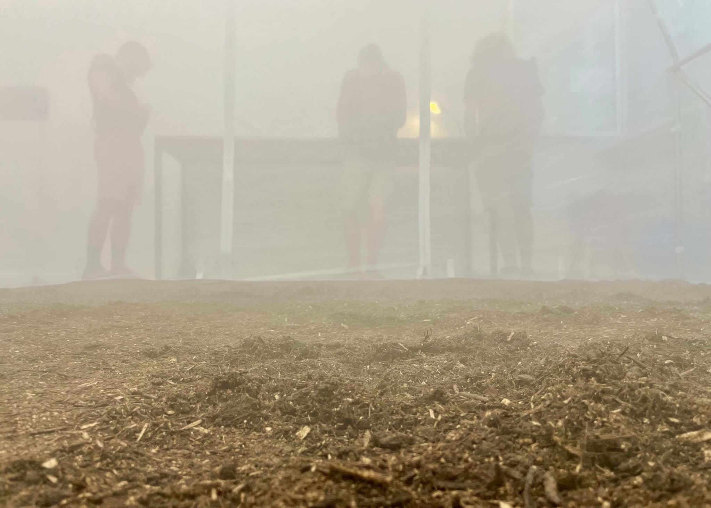
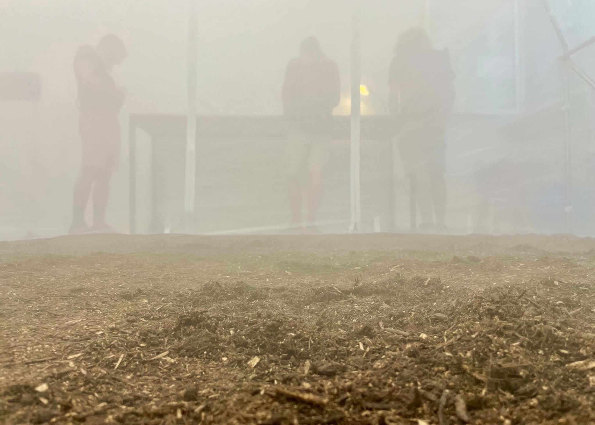
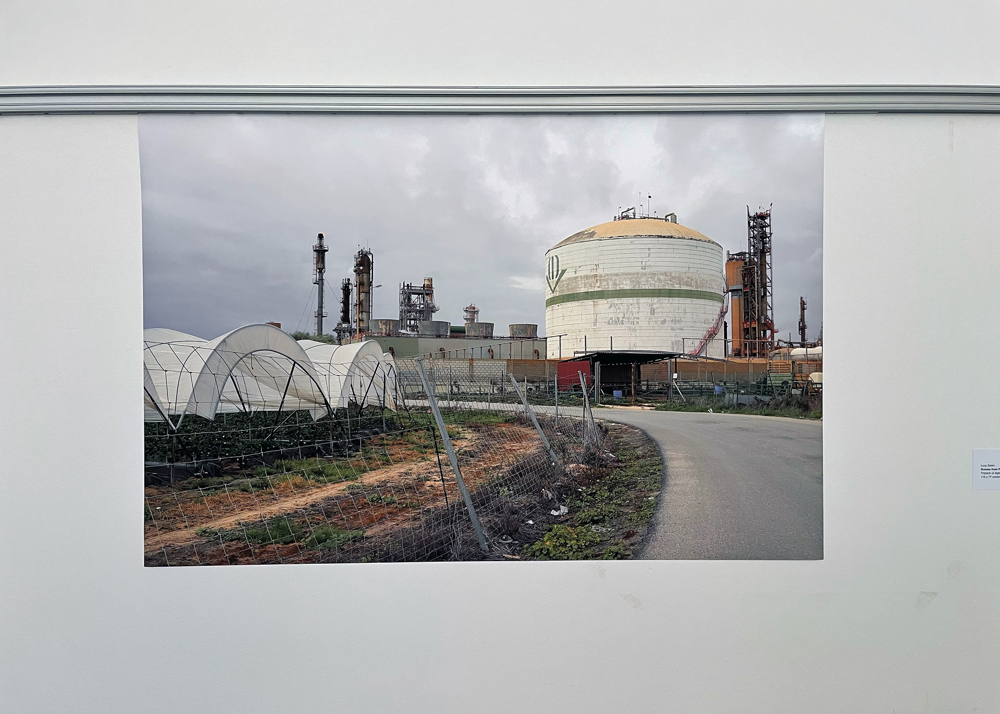
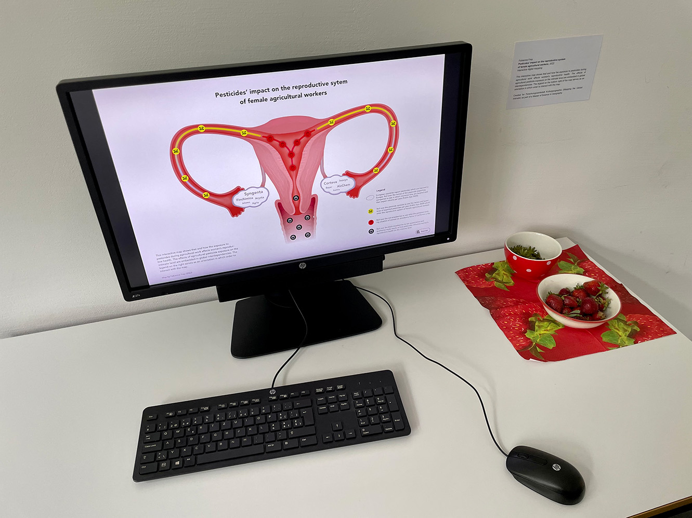
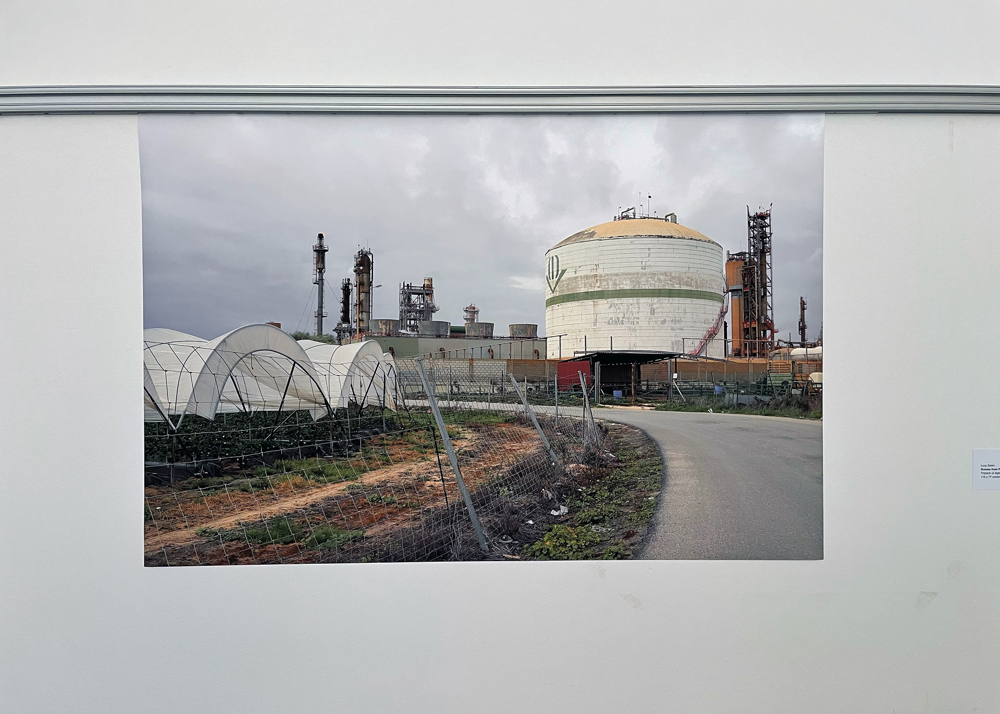
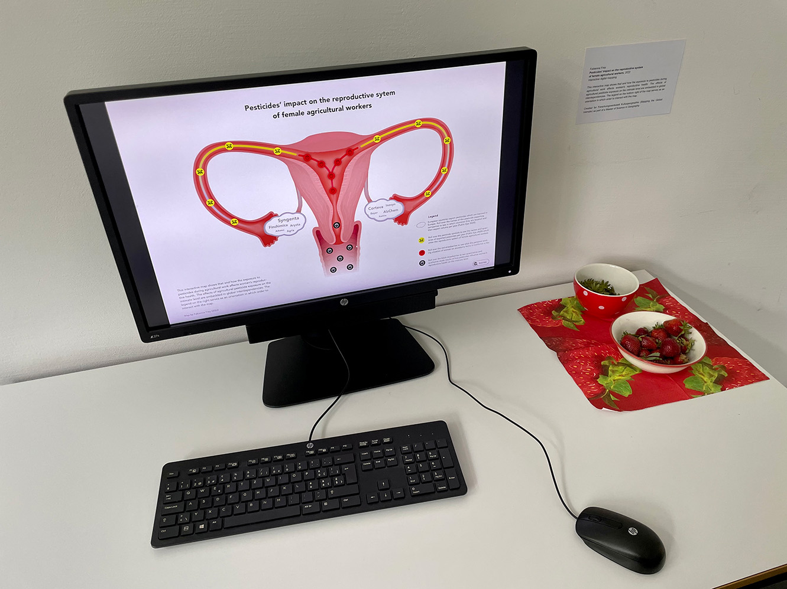
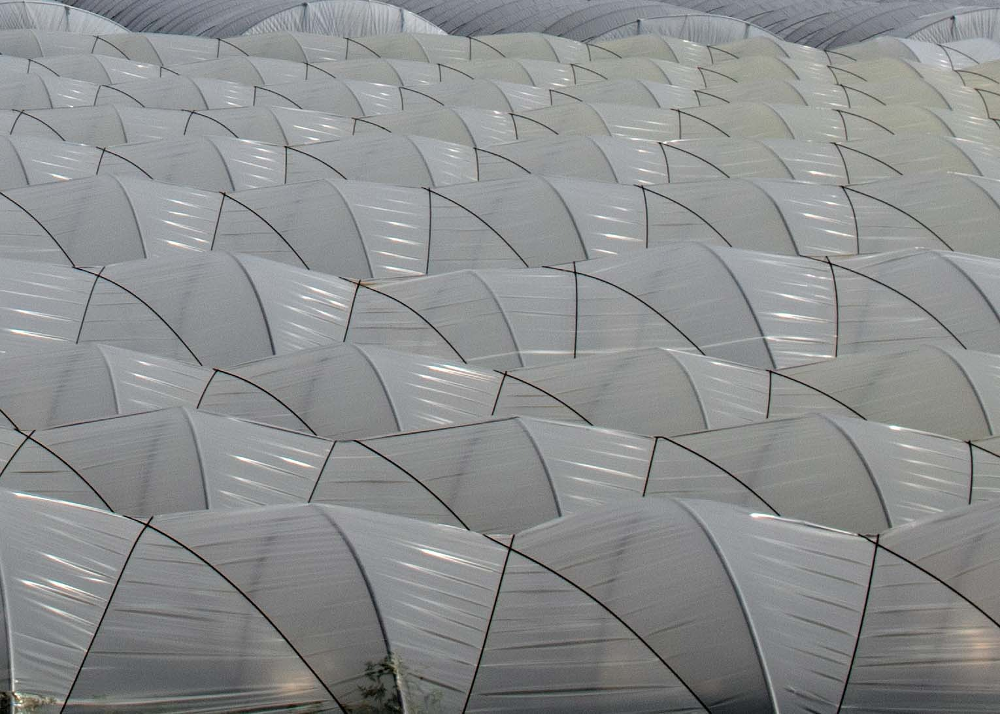
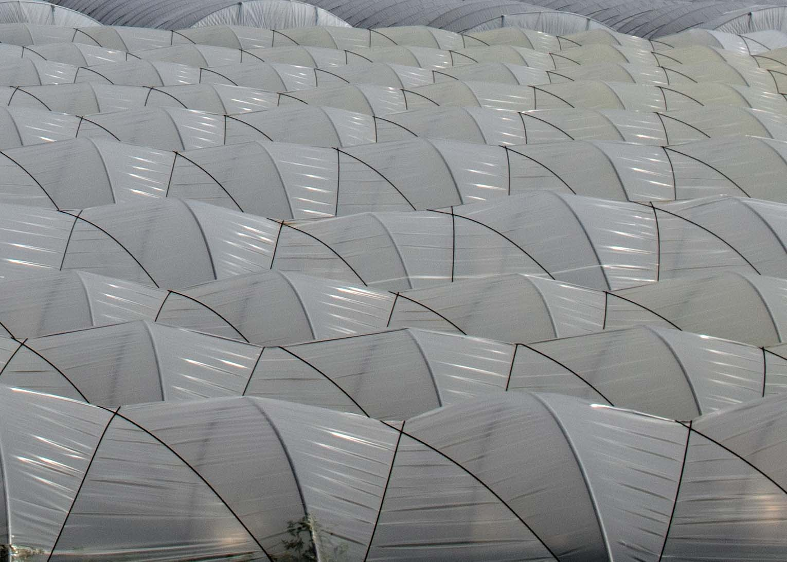

Exposición
Fieldwork and exhibition design
In the centre of the exhibition space stood a greenhouse with an arched steel frame and translucent membrane. Visitors could enter the greenhouse to experience foggy air, a soundscape of blended field recordings, and soil under their feet. They could also walk around the installation and engage with wall-mounted photographs, activist posters, digital displays, research collages, and interview transcripts. These media collectively conveyed a social and political context for the greenhouse installation. While not a direct representation by any means, the installation catalysed reflection. One visitor stated that they could ‘re-sense’ the atmosphere, allowing them to better imagine what it would be like to work in such harsh conditions.
To design Exposición, I drew upon fieldwork in Huelva, Andalusia, where the intensive agrochemical industry has produced a vividly humanmade topography, from its expansive ‘sea’ of plastic polytunnels to the largest radioactive waste deposits in Europe. Strawberry pickers, predominantly women from Morocco, are denied permanent residency while bearing the burden of exposure to carcinogenic and endocrine-disrupting herbicides. Following my fieldwork in Huelva, I felt compelled to bring my field notes and landscape photography to life by designing an immersive and multisensory exhibition space. The title of the exhibition reflected this aim; the Spanish word ‘exposición’ can be translated as both (chemical) exposure and (art) exhibition. The idea was that Exposición would tell multiple stories, interweaving the perspectives of seasonal workers and activists with the visitor's own embodied experience.
Exposición was funded and organized by mLAB, a creative media space within the Institute of Geography at the University of Bern, as part of their annual residency programme in May 2022. I collaborated with two researchers at Bern: geographer Nora Komposch who investigates the reproductive health of agricultural labourers in Andalusia from a social science perspective; and Adrien Mestrot, Professor of soil science, whose laboratory team researches how pollutants including trace pesticides move through and transform (with/in) environments.
Related research: 'Exhibiting toxicity: sprayed strawberries and geographies of hope' in Cultural geographies (Sabin, Komposch, and Mestrot 2024); 'The human and environmental cost of perfect strawberries' in Pesticide Action Network UK (Sabin 2024); Exposición in Artographies, published with Transcript (Winkel et al., 2024).


 



 




 
